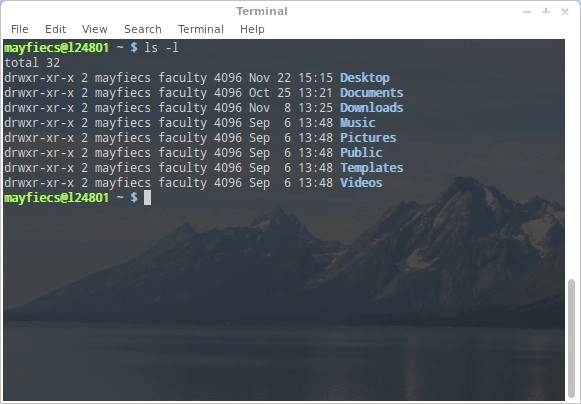
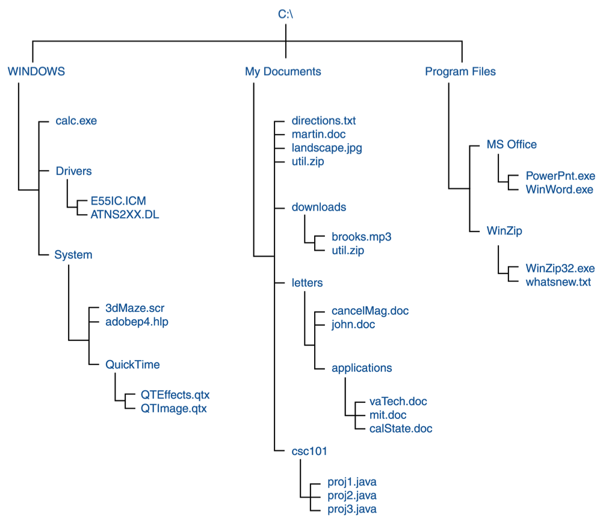
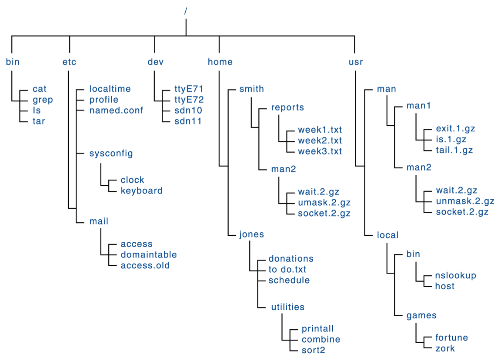

James Madison University, Fall 2016 Semester
Lab02: Unix commands and files

Background
The workstations in ISAT/CS 143 run Linux Mint, and the iMacs in ISAT/CS 248 run OS X. Both operating systems are based on Unix and come with a powerful suite of general purpose computing tools. Many of these tools are only available via the command line or "terminal" interface. You will learn some of these commands this semester and others throughout your career. Today we will focus on basic survival skills for navigating the command line and a Unix-based file system.
Objectives
Describe how a Unix file system is organized.
Develop familiarity with basic Unix commands.
Be comfortable working in a Unix environment.
Instructions
If you have never used the command-line before, we highly recommend you watch this 13-minute tutorial on YouTube before you begin the lab. For best results, follow along with your own terminal.
Download the  Lab02.txt
worksheet and open/edit the file as plain text. Submit your answers via Canvas
by the deadline.
Lab02.txt
worksheet and open/edit the file as plain text. Submit your answers via Canvas
by the deadline.
Part 1: File Systems and Paths
Most computer users are familiar with the Windows file system, which uses a "drive letter" and backslashes to identify files.
The following example shows the "path" or location of the file Hello.java, starting from the C: drive.
C:\Users\John\Desktop\Hello.java
In Unix-based systems, there are no drive letters. All files (and disk drives) can be reached from the "root" directory, designated with a forward slash ( / ).
/Users/John/Desktop/Hello.java (on OS X)
/home/john/Desktop/Hello.java (on Linux)
All three of these examples are "fully qualified" or absolute paths, because they indicate the exact location of the file within the computer's file system.
You can alternatively specify a relative path, based on your current location in the file system.
For example, if you are working in the /home/john/ directory on Linux, you can simply use the name Desktop/Hello.java to identify that file.
Study the following example file system diagrams and answer the questions below.
-

QUESTION: What do you find at the top of the Windows diagram? Describe which hardware it represents.
QUESTION: What do you find listed below the "Program Files" directory? Describe what each file does.
QUESTION: What is the path for the file john.doc? What is the path for the file 3dMaze.scr?

QUESTION: In the Unix diagram, what is the absolute path to "donations" in the "jones" directory?
QUESTION: You are now working in the /home/smith/ directory. What is the relative path to week1.txt?
QUESTION: Where are the "program files" installed on a Unix-based system? Name at least two paths.
Windows File Diagram
Unix File Diagram
Part 2: Command Line Basics
The following instructions will lead you through some basic exercises involving the command line. Open a new Terminal window to get started. Stop and ask your neighbor or a lab assistant for help anytime you don't understand something.
- Listing files
The Unix file system is hierarchical. It starts at the root, designated by /. Every user has a home directory, designated by ~. To see a list of files, use the "ls" command.
lslist the current directory ls ~/Desktoplist your desktop directory ls /list the root directory Try the above commands in your terminal.
- Creating directories
The commands "mkdir" and "rmdir" will make a new directory and remove a directory from the file system, respectively. Try creating a new subdirectory of your home directory:
mkdir Lab02The "ls" command should now show a new directory named "Lab02". Remove the new directory with:
rmdir Lab02Verify that it has been removed using the "ls" command.
- Current directory
While you are logged in, you are attached to a "current directory" in the file system. To see what your current directory is, enter the "print working directory" command:
pwdTo change your current directory to a different directory, use the "change directory" command:
cd directoryThe angle brackets are not part of the command, but indicate a placeholder for something you type. For example:
cd /change to the root directory cd ~/Desktopchange to the Desktop subdirectory within your home directory cdchange to your home directory (default working directory) Try the above commands on your workstation. Do an "ls" command after each step to list the files in that directory.
- Parent directory
The special names "." and ".." refer to the current directory and parent directory, respectively.
ls .list current directory ls ..list parent directory ls ../..list parent of parent directory Try the above commands on your workstation.
QUESTION: If you are in your home directory, what is the location of ../..?
- Command history
Unix keeps track of the commands you have recently entered. Use the up arrow to recall the previous command you wrote, and press enter to run it again. Now press up several times to go back several commands, followed by the down arrow to move forward to more recent commands.
QUESTION: Why is it useful to recall commands like this? Please give a specific example.
- Nano text editor
Nano is a simple text editor that can be used on most Unix platforms. When nano is invoked, a control-key menu appears at the bottom of the screen. Try creating a new file with nano and copy a small section of this lab into it:
nano hello.txtPractice using the control keys to save (write), exit, search, cut (delete a line), uncut (paste the last cut line), go forward, and go backward.
Raise your hand when you have completed this step, and demonstrate your nano skills to a lab assistant.
- Tab completion
When working on the command line, you don't need to type every single character! Instead, use the tab key to complete the current word. For example, type "nano he" without pressing enter, and then press tab. The terminal should complete the word "hello.txt" for you.
Try typing the following command with as few keystrokes as possible. (Hint: Use the tab key sometime after every slash.)
nano /usr/share/info/dir - File commands
Here are some basic file manipulation commands. Practice using them with the file that you created in the last step.
cp fromfile tofileCopy a file. The "from file" and "to file" can be relative or absolute file names. mv file directory
mv oldname newnameMove a file. This command can also be used to change the name of a file. rm filenameDelete (remove) a file. You might want to make a copy of it first. cat filenameShow the contents of a file (technically, "catenate" it to the standard output). less filenameView the file contents one page at a time.
Use the arrow keys and page up/down to scroll through the file.
Press 'q' to quit (exit the less program).QUESTION: What commands would you type to do the following? (Test them out on your workstation.)
- Create a new subdirectory named step14.
- Copy a file from your home directory into step14.
- Rename the subdirectory step14 to delete_me.
- Delete the subdirectory. (This step requires multiple commands.)
- Man pages
You now know something about ls, mkdir, rmdir, pwd, cd, nano, cp, mv, rm, cat, and less. Each of these programs have optional command line arguments. For example, type
ls -l(ls with long formatting) in your terminal. You can use the "man" command to view the manual page for any command.man lsQUESTION: Use "man" to answer the following questions:
- What does clear do?
- What does grep do?
- What does man do?
- Wildcards
There are two "wildcard" symbols that can be used in most commands. Practice using them with the files in your directory. Create more files if necessary, using "cp" or "nano".
*match any series of 0 or more characters ?match any 1 character For example:
ls a*list files starting with 'a' rm *.logdelete all files ending ".log" ls ??text.*list files with names containing any two characters followed by "text" and ending with any suffix
Part 3: Optional advanced stuff
- Hidden files
Files that have names beginning with '.' are not normally shown in directory listings. These files are typically used for configuration purposes, or to store personal settings for applications. To see the hidden files in a directory, add "-a" (all) to the ls command.
ls -aQUESTION: What hidden directories and files exist in your home directory?
- Long listings
To see additional details for the files in a directory, add the "-l" (long) option to the ls command.
ls -lThe directory listing that results will include several attributes for each file.
[groverf@cs347 ~]$ ls -l total 44 drwxr-x--- 2 groverf faculty 4096 Dec 11 2009 bin drwxr-x--- 2 groverf groverf 4096 Jul 26 11:20 Desktop drwxr-x--- 3 groverf faculty 4096 Jul 26 11:20 downloads -rwxr-x--- 2 groverf groverf 4096 Jul 26 14:15 cs347.txt drwxr-x--- 2 groverf groverf 4096 Aug 28 2009 tmp lrwxrwxrwx 1 root root 33 Aug 12 2009 www -> /opt/tomcat/webapps/users/groverf
The first 10 characters indicate the following information:
* file type (d for directory, - for a regular file, l for link)
* owner permissions (rwx)
* group permissions (rwx)
* public permissions (rwx)If the r, w, or x is present, that permission is on (access available); if it shows as a dash ('-'), that permission is off. For example, "rwxr-xr--" indicates that the owner has {read, write, execute} permissions, group members have {read, execute} permissions, and the public has {read} permission only.
The remaining fields in the listing are:
* number of links to the file
* file owner
* file group
* file size
* date last modified
* file name - Pipes and redirects
One of the useful features of Unix is the ability to transfer the output of one command to the input of another. The symbol "|" (vertical bar) pipes output between commands.
ls -l | sort -k 8sorts output from "ll" by the 8th field of the output (time) ls -la | lessdisplays the output of ls one page at a time The symbol '>' redirects standard output (normally directed to the screen) to a file.
ls -l > list.txtsends output of the "ls" command to a file named "list.txt" ls -l | sort -k 8 > sortedlistsorts the directory listing and saves it in the file "sortedlist" QUESTION: How would you create a directory listing sorted by file size?
- Ready for more?
Check out http://ss64.com/bash/ for a longer list of Unix commands.